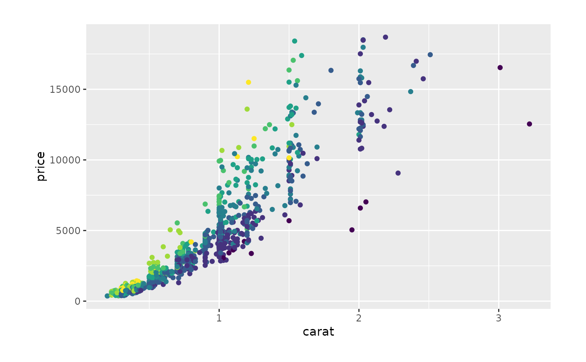
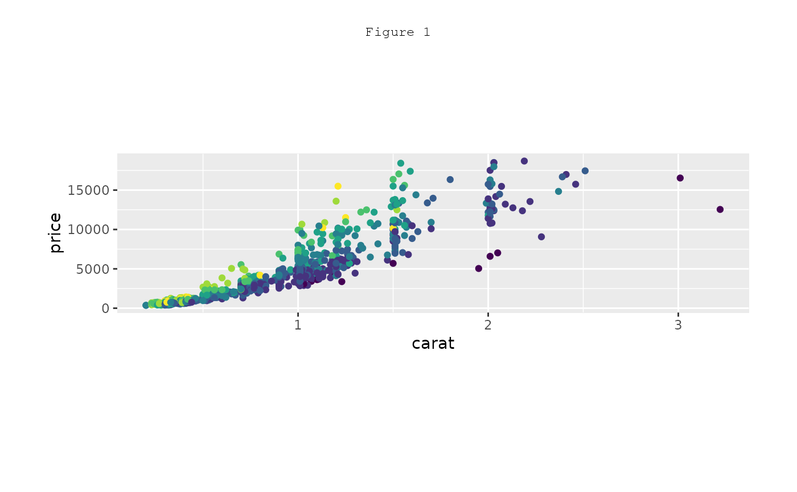
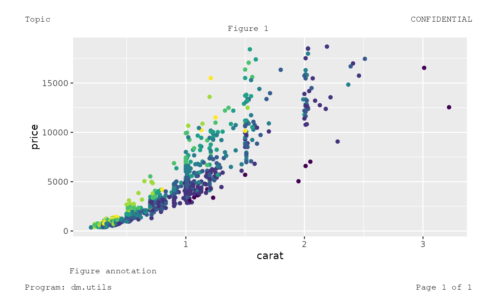
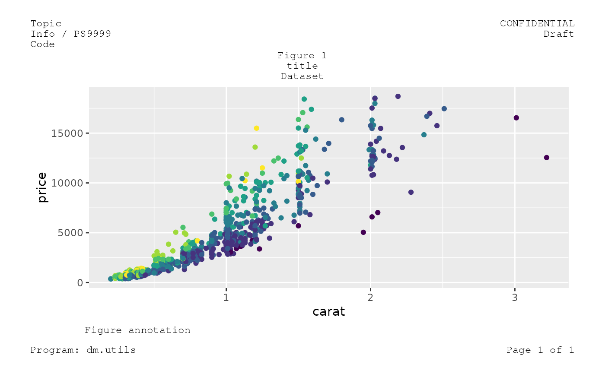
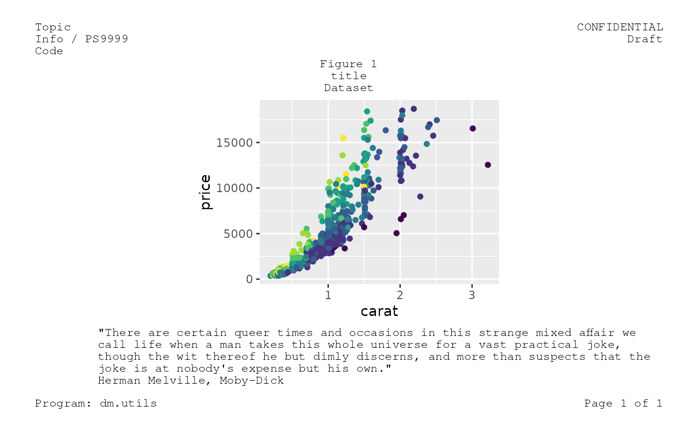
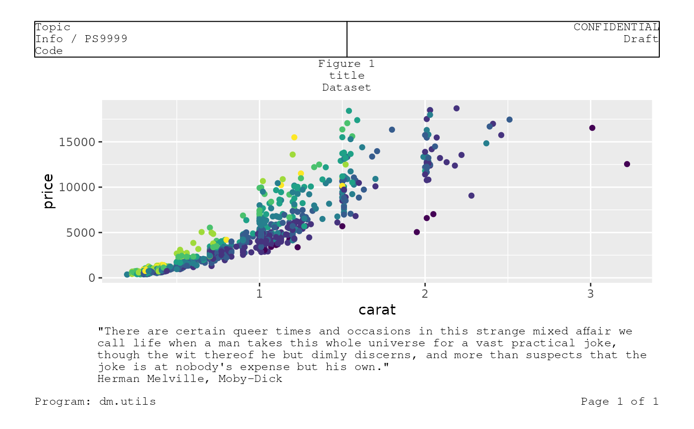

Annotation Slate
slate.RdAnnotation Slate
clean_slate( margin = grid::unit(c(t = 2.54, r = 4.2, b = 2.54, l = 2.54), units = "cm"), gp = grid::gpar(lineheight = 1, fontfamily = "Courier", fontsize = 9) ) add_figure(page, gr, guide = FALSE, width = 1, height = 1) add_header(page, left, right, ...) add_footer(page, left, right, ...) add_title(page, text, guide = FALSE) add_note( page, text, guide = FALSE, str_width = 80, x = 0.1, skipped_lines = c(1, 0) )
Arguments
| margin | (`unit`) |
|---|---|
| gp | (`list`) |
| page | (`grob`) |
| gr | (`grob`) |
| guide | (`logical`) |
| width, height | (`numeric` or `unit`). |
| left, right, text | (`character`) |
| ... | arguments passed to other functions. |
| str_width | (`numeric`) |
| x | (`numeric` or `unit`) |
| skipped_lines | (`numerix`) |
Functions
clean_slate: start an annotation page.add_figure: add a figure to a clean page.add_header: add a header.add_footer: add a footer.add_title: add a title.add_note: add a note.
Examples
# Default margins are for an A4 page, change it for the plot viewer clean_slate(margin = unit(rep(0.05, 4), units = "npc")) %>% add_figure(gr = circleGrob()) %>% grid.draw()# Of course, it works with ggplot objects dsamp <- diamonds[sample(nrow(diamonds), 1000), ] gg <- ggplot(dsamp, aes(carat, price)) + geom_point(aes(colour = clarity), show.legend = FALSE) clean_slate(margin = unit(rep(0.05, 4), units = "npc")) %>% add_figure(gr = gg) %>% grid.draw()# Then add annotation elements, for instance, a title ... clean_slate(margin = unit(rep(0.05, 4), units = "npc")) %>% add_figure(gr = gg, height = .5) %>% add_title("Figure 1") %>% grid.draw()# ... and / or other elements ... clean_slate(margin = unit(rep(0.05, 4), units = "npc")) %>% add_figure(gr = gg) %>% add_header(left = "Topic", right = "CONFIDENTIAL") %>% add_title("Figure 1") %>% add_note(text = "Figure annotation") %>% add_footer(left = "Program: dm.utils", right = "Page 1 of 1") %>% grid.draw()# ... except `clean_slate` and `grid.draw`, the order does not matter clean_slate(margin = unit(rep(0.05, 4), units = "npc")) %>% add_note(text = "Figure annotation") %>% add_header(left = "Topic", right = "CONFIDENTIAL") %>% add_title("Figure 1") %>% add_figure(gr = gg) %>% add_footer(left = "Program: dm.utils", right = "Page 1 of 1") %>% grid.draw()# For several lines of annotation, provide a vector clean_slate(margin = unit(rep(0.05, 4), units = "npc")) %>% add_figure(gr = gg) %>% add_header( left = c("Topic", "Info / PS9999", "Code"), right = c("CONFIDENTIAL", "Draft") ) %>% add_title(text = c("Figure 1", "title", "Dataset")) %>% add_note(text = "Figure annotation") %>% add_footer(left = "Program: dm.utils", right = "Page 1 of 1") %>% grid.draw()# By default, notes start at 10% of width and span over 80 characters clean_slate(margin = unit(rep(0.05, 4), units = "npc")) %>% add_figure(gr = gg, width = .5) %>% add_header( left = c("Topic", "Info / PS9999", "Code"), right = c("CONFIDENTIAL", "Draft") ) %>% add_title(text = c("Figure 1", "title", "Dataset")) %>% add_note( text = c( "\"There are certain queer times and occasions in this strange mixed affair we call life when a man takes this whole universe for a vast practical joke, though the wit thereof he but dimly discerns, and more than suspects that the joke is at nobody's expense but his own.\"", "Herman Melville, Moby-Dick" ) ) %>% add_footer(left = "Program: dm.utils", right = "Page 1 of 1") %>% grid.draw()# Check the layout by adding guides clean_slate(margin = unit(rep(0.05, 4), units = "npc")) %>% add_figure(gr = gg) %>% add_header( left = c("Topic", "Info / PS9999", "Code"), right = c("CONFIDENTIAL", "Draft"), guide = TRUE ) %>% add_title(text = c("Figure 1", "title", "Dataset")) %>% add_note( text = c( "\"There are certain queer times and occasions in this strange mixed affair we call life when a man takes this whole universe for a vast practical joke, though the wit thereof he but dimly discerns, and more than suspects that the joke is at nobody's expense but his own.\"", "Herman Melville, Moby-Dick" ) ) %>% add_footer(left = "Program: dm.utils", right = "Page 1 of 1") %>% grid.draw()